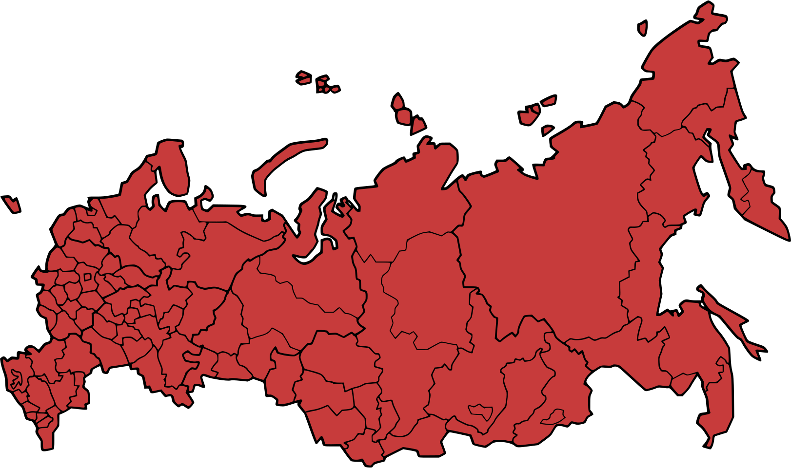
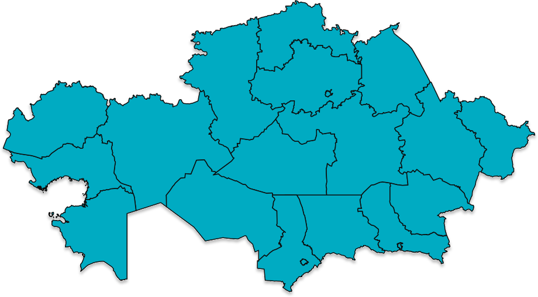
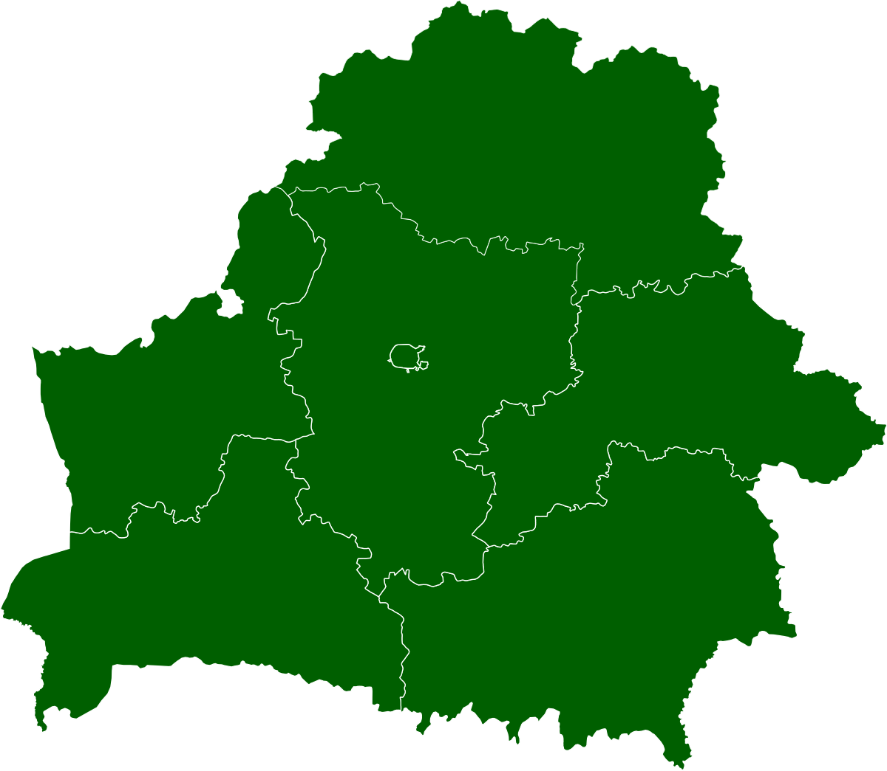
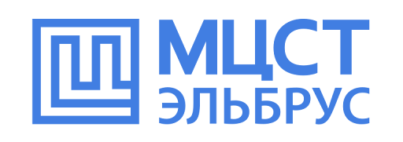
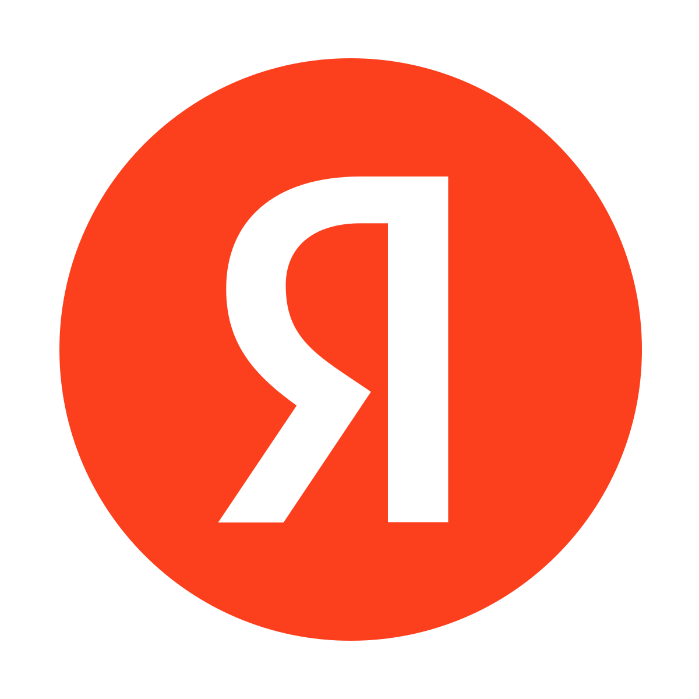
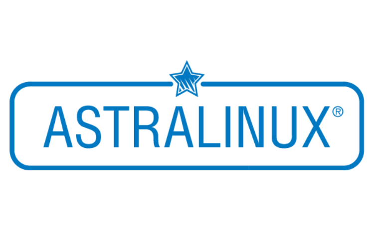
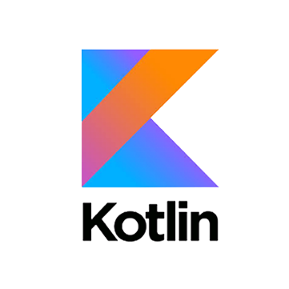
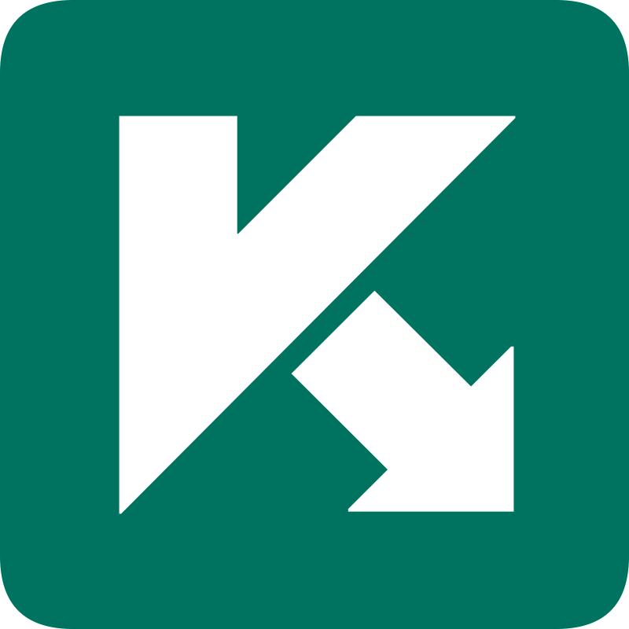

Достижения отечественного IT - продукта.

MCST
Российская частная компания, специализирующаяся на разработке универсальных микропроцессоров и операционных систем. Имеет опыт разработки супер-ЭВМ «Эльбрус».
Selectel
Российская технологическая компания, предоставляющая облачные инфраструктурные сервисы и услуги дата-центров. В 2025 году Selectel вошёл в топ-20 самых дорогих компаний Рунета по версии Forbes с общей стоимостью в $680 миллионов.

Yandex
Российская компания в отрасли информационных технологий, владеющая одноимённой системой поиска в интернете, интернет-порталом и веб-службами в нескольких странах. Наиболее важное положение занимает на рынках России, Беларуси и Казахстана.
Postgres Pro
Крупнейший российский разработчик СУБД и других продуктов для работы с данными, усовершенствовавший вариант системы управления базами данных PostgreSQL.

Astra Linux
Операционная система на базе ядра Linux, которая внедряется в России в качестве альтернативы Microsoft Windows в государственных организациях. Обеспечивает степень защиты обрабатываемой информации до уровня государственной тайны «особой важности» включительно. Включена в Единый реестр российских программ Минкомсвязи России.

Kotlin
Язык программирования, разрабатываемый с 2010 года под руководством Андрея Бреслава. Назван в честь российского острова Котлин в Финском заливе, на котором расположен город Кронштадт

Касперский
Международная компания из России, специализирующаяся на разработке систем защиты от компьютерных вирусов, спама, хакерских атак и прочих киберугроз. Компания ведёт свою деятельность более чем в 200 странах и территориях мира. Центральный офис «Лаборатории Касперского» находится в Москве.